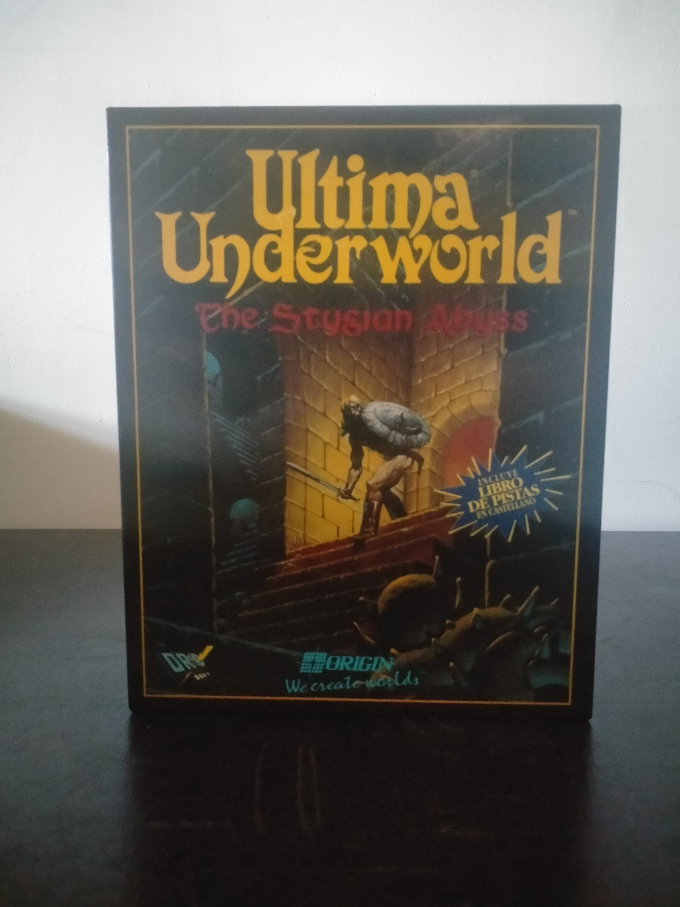

Ficha #000118
Ultima Underworld: The Stygian Abyss
Ultima Underworld: The Stygian Abyss es uno de los juegos de rol más importantes de comienzos de los años noventa y una obra clave en la evolución del videojuego en primera persona. Desarrollado por Blue Sky Productions y publicado por Origin Systems en 1992, trasladó el universo Ultima a un entorno subterráneo tridimensional en tiempo real, con exploración libre, combate, conversación con personajes, magia, gestión de inventario, uso físico de objetos y una fuerte sensación de inmersión. Su motor permitía movimiento continuo, desniveles, iluminación, superficies texturizadas y una interacción con el mundo muy avanzada para la época, anticipando rasgos que posteriormente se asociarían al immersive sim. Esta edición española en caja grande, editada y distribuida por Dro Soft, conserva especial valor documental por su localización al castellano, por el soporte en disquetes de 3,5 pulgadas y por incluir material impreso de consulta y protección propio de las ediciones físicas de PC de principios de los noventa.
- Formato
- Big Box
- Plataforma
- MsDos
- Género
- Rol Dungeon crawler RPG en primera persona Fantasía Aventura
- Serie
- Todos Big Box
- Desarrollador
- Blue Sky Productions
- Distribuidor
- Origin Systems, Dro Soft
- EAN
- —
Contenido de la edición
- Caja Big Box
- Disquetes de 3,5 pulgadas
- Manual o documentación impresa
- Libro de pistas en castellano
- Libro de claves
- Mapa o material de referencia impreso
- Fundas o sobres de disquetes
Preservación
- Protección
- Manual lookup
- Formato recomendado
- Otro
- Jugable en virtualización
- Sí
Edición en disquetes de 3,5 pulgadas con documentación física asociada. Para preservación se recomienda realizar imagen individual de cada disquete, verificar integridad en entorno MS-DOS o DOSBox y conservar digitalizados el libro de claves, el libro de pistas y el resto de materiales impresos necesarios para la experiencia original y posibles consultas anticopia.